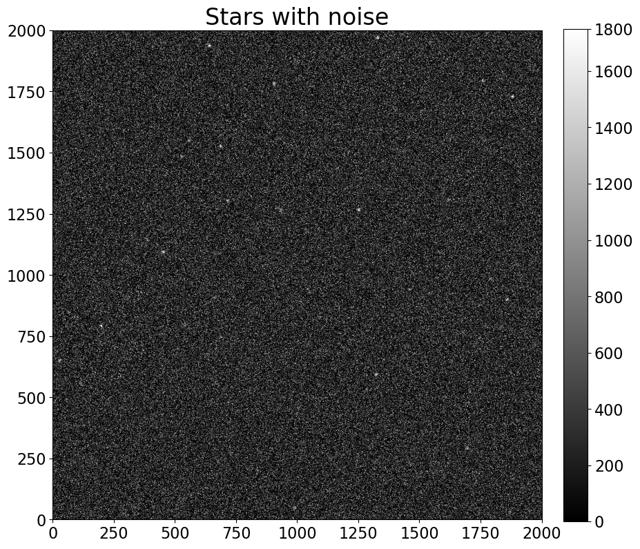
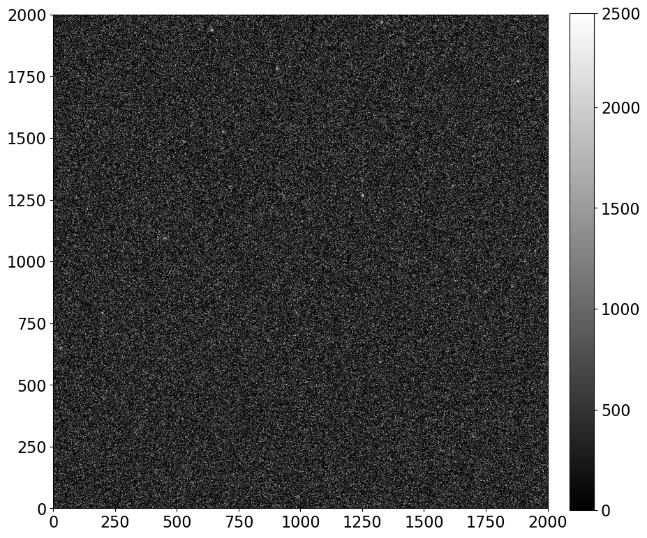
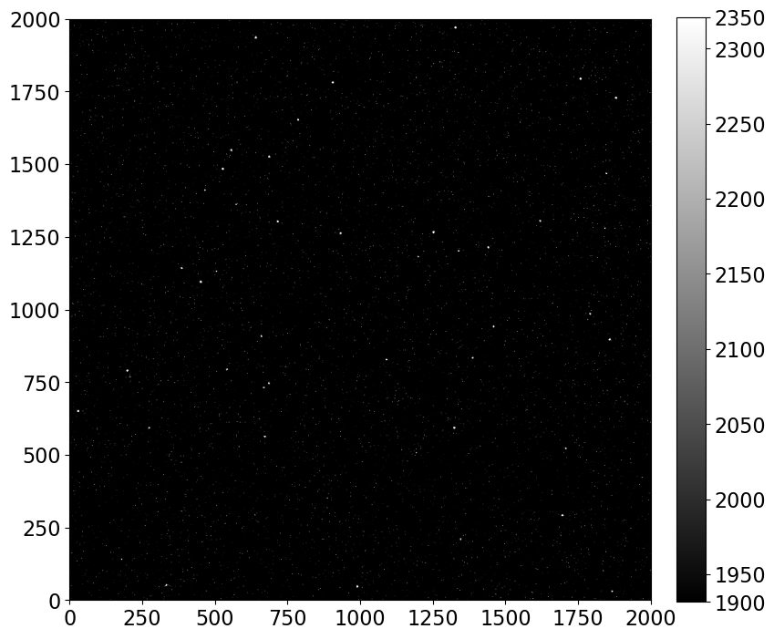
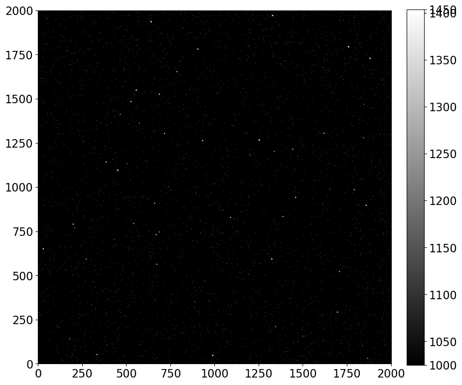
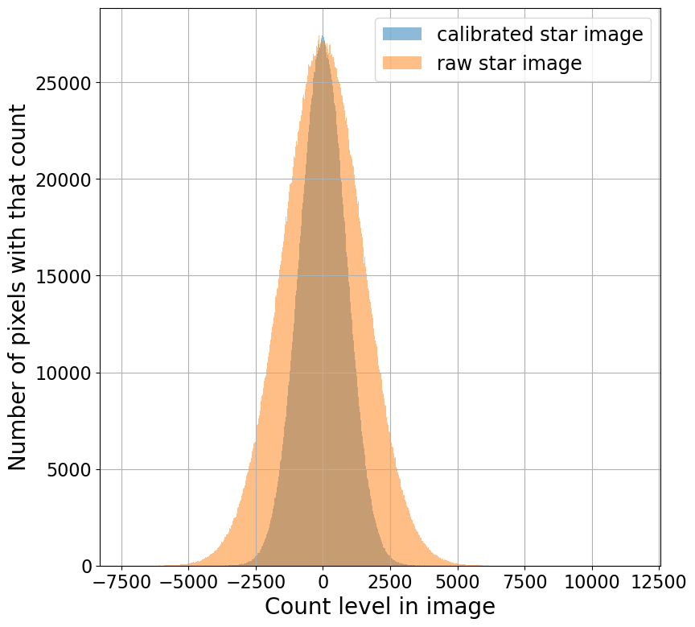

Обзор калибровки
Contents
1.4. Обзор калибровки#
Изображение неба содержит отсчеты из нескольких источников. Задача редукции данных (другое название калибровки изображений) состоит в том, чтобы удалить все нецелестиальные отсчеты из изображения и скорректировать неравномерную чувствительность.
В конце предыдущего notebook мы пришли к выражению для отсчетов в научном изображении в терминах источников отсчетов:
Решая для отсчетов только от звезд, получаем:
Удалить шум из необработанного изображения невозможно, потому что шум случаен.
Dark current обычно вычисляется из dark frame (также известного как dark изображение). Такое изображение также содержит bias и read noise, поэтому:
Еще раз обратите внимание, что шум не может быть удален.
1.4.1. Этот шум невозможно удалить из CCD изображений#
Чтобы продемонстрировать, что вы не можете удалить шум из изображения, давайте создадим изображение только со звездами и шумом и попытаемся вычесть изображение шума, созданное с теми же параметрами. Количество шума здесь преувеличено, чтобы сделать его явно видимым на изображениях.
import numpy as np
%matplotlib inline
from matplotlib import pyplot as plt
from astropy.visualization import hist
from astropy.stats import histogram
import image_sim as imsim
from convenience_functions import show_image
# Use custom style for larger fonts and figures
plt.style.use('guide.mplstyle')
1.4.1.1. Сначала несколько звезд с шумом#
Изображение ниже показывает звезды (большие “пятна” на изображении), но также показывает довольно много шума (гораздо меньшие “точки”).
image = np.zeros([2000, 2000])
gain = 1.0
noise_amount = 1500
stars_with_noise = imsim.stars(image, 50, max_counts=2500, fwhm=10) + imsim.read_noise(image, noise_amount, gain=gain)
show_image(stars_with_noise, cmap='gray', percu=50)
plt.title('Stars with noise')
Text(0.5, 1.0, 'Stars with noise')

1.4.1.2. Теперь неправильная попытка уменьшить шум#
Обратите внимание, что вызов функции шума имеет точно такие же аргументы, как и выше, подобно тому, как электроника вашей камеры будет иметь одинаковые свойства шума каждый раз, когда вы считываете изображение.
Однако количество шума увеличилось, а не уменьшилось. Выделить звезды на этом изображении намного сложнее.
incorrect_attempt_to_remove_noise = stars_with_noise - imsim.read_noise(image, noise_amount, gain=gain)
show_image(incorrect_attempt_to_remove_noise, cmap='gray', percu=50)

1.4.2. Каждое изображение содержит шум#
Каждое изображение, включая калибровочные изображения, такие как bias и dark frames, содержит шум. Если бы мы попытались откалибровать изображения, взяв одно bias изображение и одно dark изображение, конечный результат мог бы выглядеть хуже, чем до редукции изображения.
Для демонстрации посмотрим, что произойдет ниже.
Обратите внимание, что здесь мы создаем реалистичные bias и dark, но не включаем read noise во flat; мы вернемся к этому моменту позже.
1.4.2.1. Сначала установим параметры для CCD#
Они такие же, как в предыдущем notebook, за исключением read noise, который составляет 700\(e-\), в 100 раз больше, чем в предыдущем notebook.
gain = 1.0
star_exposure = 30.0
dark_exposure = 60.0
dark = 0.1
sky_counts = 20
bias_level = 1100
read_noise_electrons = 700
max_star_counts = 2000
1.4.2.2. Генерируем изображения с шумом#
bias_with_noise = (imsim.bias(image, bias_level, realistic=True) +
imsim.read_noise(image, read_noise_electrons, gain=gain))
dark_frame_with_noise = (imsim.bias(image, bias_level, realistic=True) +
imsim.dark_current(image, dark, dark_exposure, gain=gain, hot_pixels=True) +
imsim.read_noise(image, read_noise_electrons, gain=gain))
flat = imsim.sensitivity_variations(image)
realistic_stars = (imsim.stars(image, 50, max_counts=max_star_counts) +
imsim.dark_current(image, dark, star_exposure, gain=gain, hot_pixels=True) +
imsim.bias(image, bias_level, realistic=True) +
imsim.read_noise(image, read_noise_electrons, gain=gain)
)
1.4.2.3. Неоткалиброванное изображение#
Ниже мы показываем неоткалиброванное изображение; через мгновение мы сравним его с откалиброванной версией. Хотя они не выделяются, на нем действительно есть звезды.
plt.figure(figsize=(12, 12))
show_image(realistic_stars, cmap='gray', percu=99.9, figsize=(9, 9))
<Figure size 1200x1200 with 0 Axes>

1.4.2.4. Выполняем редукцию (калибровку) изображения со звездами#
Сначала мы вычисляем dark current, масштабированный по времени экспозиции нашего изображения.
scaled_dark_current = star_exposure * (dark_frame_with_noise - bias_with_noise) / dark_exposure
Затем мы вычитаем bias и dark current из изображения со звездами, а затем применяем flat коррекцию.
calibrated_stars = (realistic_stars - bias_with_noise - scaled_dark_current) / flat
show_image(calibrated_stars, cmap='gray', percu=99.9)

1.4.2.5. Редукция изображения немного улучшает его#
Звезды выделяются более четко, чем на нередуцированном изображении.
Это изображение выглядит не намного лучше, чем неоткалиброванное изображение, но помните, что read noise, используемый в этом смоделированном изображении, 700 \(e^-\) на пиксель, нереалистично высокий.
1.4.2.6. Редукция изображения увеличивает шум в изображении#
Гистограмма ниже показывает значения пикселей до и после калибровки. Ширина распределения является мерой read noise. Как и ожидалось, редукция изображения увеличивает read noise. Одна из причин, по которой делается несколько калибровочных изображений каждого типа, состоит в том, чтобы уменьшить количество шума в калибровочном изображении. Это, в свою очередь, сохранит шум в финальном изображении как можно меньше.
plt.figure(figsize=(9, 9))
hist(calibrated_stars.flatten(), bins='freedman', label='calibrated star image', alpha=0.5)
hist(stars_with_noise.flatten(), bins='freedman', label='raw star image', alpha=0.5)
plt.legend()
plt.grid()
plt.xlabel('Count level in image')
plt.ylabel('Number of pixels with that count');
